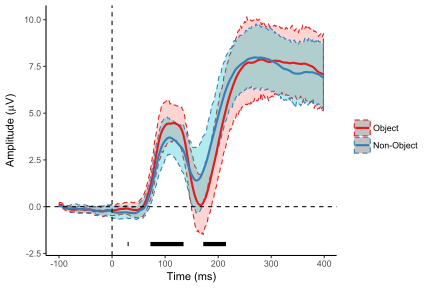
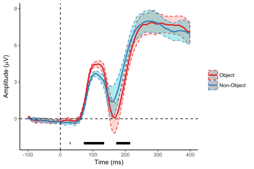
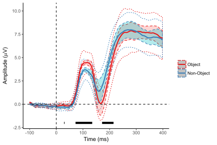

As I mentioned in a previous post, between-subject confidence intervals/standard errors are not necessarily all that useful when your data is within-subjects. What you’re interested in is the not really the between-subject variability but the variability of the differences between your conditions within subjects. I’m going to use here the command summarySEwithin from the package Rmisc. This removes between-subject variability for within-subject variables, returning corrected standard deviations, standard errors, and confidence intervals. These are adjusted using the Cousineau-Morey method (2008), and you can also find some more examples over on Cookbook-R. Let’s prep the data and load all the packages I’ll need.
library(ggplot2)
library(reshape2)
library(Rmisc)
library(dplyr)
library(purrr)
library(magrittr)
levCatGA <- read.csv("https://raw.githubusercontent.com/craddm/ExploringERPs/master/levCatObjNon.csv",
header = FALSE)
names(levCatGA) <- c("Object", "Non-Object", "Time", "Subject")
levCatGA <- levCatGA[(levCatGA$Time >= -100) & (levCatGA$Time <= 400),]
levCatGA$Subject <- as.factor(levCatGA$Subject)
levCatGA <- melt(levCatGA, id.vars = c("Subject", "Time"))
names(levCatGA) <- c("Subject", "Time", "condition", "amplitude")
theme_set(theme_classic())
levCat.plot <- ggplot(levCatGA, aes(Time, amplitude))+
scale_color_brewer(palette = "Set1")Now let’s run t-tests on each timepoint (again, using purrr) and also summarize the data using the summarySEwithin function from Rmisc.
runningT <- levCatGA %>%
split(.$Time) %>%
map(~t.test(amplitude~condition, paired = TRUE, data = .))
runningSE <- levCatGA %>%
split(.$Time) %>%
map(~summarySEwithin(data = ., measurevar = "amplitude",
withinvars = "condition", idvar = "Subject"))I now have two lists, runningT, containing the t-test result for each timepoint, and runningSE, containing the summarized data from each time point and the corrected SEs/CIs. For example:
runningT$`0`##
## Paired t-test
##
## data: amplitude by condition
## t = 0.35813, df = 14, p-value = 0.7256
## alternative hypothesis: true difference in means is not equal to 0
## 95 percent confidence interval:
## -0.2085599 0.2921698
## sample estimates:
## mean of the differences
## 0.04180494runningSE$`0`## condition N amplitude sd se ci
## 1 Object 15 -0.2065029 0.3196832 0.08254185 0.1770347
## 2 Non-Object 15 -0.2483078 0.3196832 0.08254185 0.1770347As before, I’ll extract the p-value for each t-test and store it in a custom data-frame for later plotting. Let’s plot the ERPs with standard between-subject confidence intervals.
pvals <- data.frame(
Time = unique(levCatGA$Time),
p.value = map_dbl(runningT,"p.value")
)
pvals$crit <- 0+(pvals$p.value <= .05)
pvals$crit[pvals$crit == 0] <- NA
levCat.plot+
stat_summary(fun.data = mean_cl_boot, geom = "ribbon",
aes(fill = condition, colour = condition),
linetype = "dashed",alpha = 0.3)+
guides(fill = "none")+
stat_summary(fun.y = mean,geom = "line", size = 1, aes(colour = condition))+
labs(x = "Time (ms)", y = expression(paste("Amplitude (",mu,"V)")), colour = "")+
geom_line(data = pvals, aes(x = Time, y = crit-3), na.rm = TRUE, size = 2)+
geom_vline(xintercept = 0, linetype = "dashed")+
geom_hline(yintercept = 0, linetype = "dashed")
The confidence intervals in the between-subjects plot don’t really help you see that the signficant timepoints are actually significant. Let’s re-plot the figure using within-subject CIs. I use here some new commands. Using map_df from purrr, I convert runningSE, a list of data frames, into a single data frame summarizing the data at each time-point after removing between-subject variability. This also uses extract function from magrittr. I then pass this data frame to geom_ribbon to plot the corrected CIs. I could also use it to plot the ERPS, but I’ll just let ggplot figure them out from the original data.
WSCI <- map_df(runningSE, extract) %>%
mutate(
Time = rep(unique(levCatGA$Time), each = 2)
#Note, you'll have to change 2 to match the number of conditions
)
levCat.plot+
geom_ribbon(data = WSCI, aes(ymin = amplitude-ci, ymax = amplitude+ci,
fill = condition, colour = condition),
linetype="dashed", alpha = 0.3)+
guides(fill = "none")+
stat_summary(fun.y = mean, geom = "line", size = 1, aes(colour = condition))+
labs(x = "Time (ms)", y = expression(paste("Amplitude (",mu,"V)")), colour = "")+
geom_line(data = pvals, aes(x = Time, y = crit-3),na.rm = TRUE,size = 2)+
geom_vline(xintercept = 0, linetype = "dashed" )+
geom_hline(yintercept = 0, linetype = "dashed")
These confidence intervals are much narrower, reflecting the correlation between measures within participants. These intervals make it easier to see where significant differences lie from the degree of overlap between.
Finally, let’s overlap the two types of confidence interval.
levCat.plot+
stat_summary(fun.data = mean_cl_normal, geom = "ribbon", aes(colour = condition),
fill = NA, linetype = "dotted", alpha = 0.3)+
geom_ribbon(data = WSCI, aes(ymin = amplitude-ci, ymax = amplitude+ci, fill = condition,
colour = condition), linetype="dashed", alpha = 0.3)+
guides(fill = "none")+
stat_summary(fun.y = mean, geom = "line", size = 1, aes(colour = condition))+
labs(x = "Time (ms)", y = expression(paste("Amplitude (", mu,"V)")), colour = "")+
geom_line(data = pvals, aes(x = Time, y = crit-3), na.rm = TRUE, size = 2)+
geom_vline(xintercept = 0, linetype = "dashed" )+
geom_hline(yintercept = 0, linetype = "dashed")
Filled, dashed lines indicate within-subject confidence intervals, while the outer, dotted lines show the position of the between-subject confidence intervals. As we saw above, the WSCIs are much narrower, largely due to the correlation between measures from within-participants.
So be careful interpreting differences from confidence intervals - check whether they show within or between subject differences before using them for Eyeball Mark I inference.
comments powered by Disqus